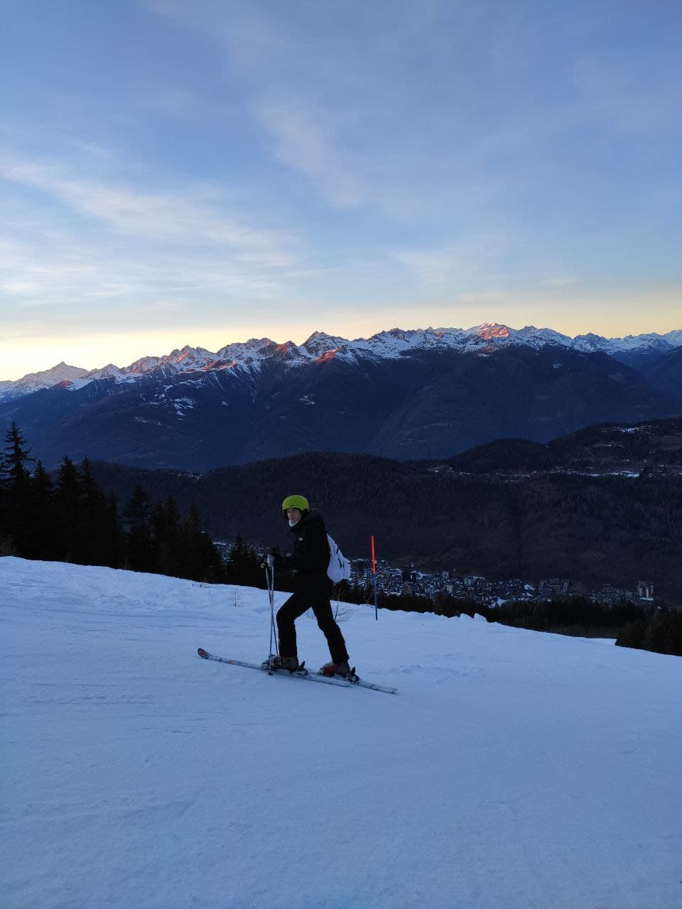
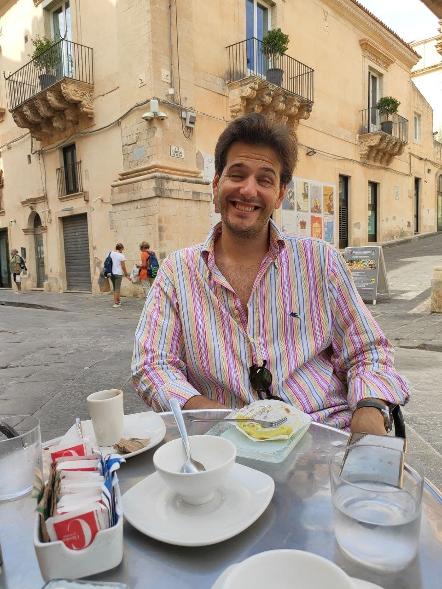

Oggi, 17 febbraio, compie gli anni questo fustooo che qui si trova felice nel suo gelido habitat. Qui stava scendendo una pista rossa dall'aspetto nero con mucho style.
il Frabbra è un vero aaaaansggggeeeeelooooo di ragazzo

"ansgelo mi sembra un po' riduttivo"

si è vero ansgela sono io, volevo dire gnookkoo "eheheheheh ora ci siamo"
My dear love, ti auguro tu sia sempre così felice e soddisfatto come davanti alle paste e granite di Noto. (con un fondino di pizza siciliana in precedenza, chiaro). Felicione così forever, più dei prossimi 1010101010 anni proprio foreeeeeeeveeeer. 6 un cuore vero e ti amo.

Il regalo è diviso in due parti: ognuna delle due parti può essere sintetizzata in una magnifica GIF di qualità. Come segue
Camminavo per le vie di Milano in cerca di un bel regalino e tra negozi e negozietti ho trovato questa magnifica marca -----giaaaaaponeeeeseeeeee------ che ha dei pezzi semplici e fatti bene e così mi sono fatta conquistare dallo stile minimal-orientale, facendomi certamente condizionare dalla possibilità di accompagnare al regalo questa gif altamente pertinente

Camminavo per le vie di Lisbona ancora in cerca di qualcosa di bello, che mi ispirasse e mi ricordasse il mio tato. Mi sono quindi imbattuta in questo posticino BELLISSIMO, elegante e pulito con un concept dal design accattivante e chi sono io per resistere d'altro canto... è un brand proprio ------portoooogheeeeeessseeeee------ e si chiama +351 che è il prefisso telefonico del portogallo. Vedendo questo blu mare (o cielo di montagna in inverno, se preferisci), ho pensato potesse essere un portacarte adatto andando verso l'estate, bello coloratino.